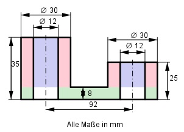
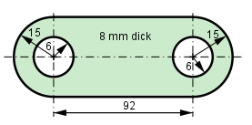

Aufgabe 165 Wie schwer ist der dargestellte Graugusshebel (Dichte 7,2 g/cm³)?   mHebel = VHebel * рHebel VHebel = rote Zylinder - blaue Zylinder + grünes Rechteckprisma + + 2 * grüner Halbzylinder - 2 * weißer Zylinder Rote Zylinder: Gesamtlänge h = (35 mm - 8 mm) + (25 mm - 8 mm) = 44 mm rrot = drot/2 = 30 mm/2 = 15 mm Blaue Zylinder: Gesamtlänge h = (35 mm - 8 mm) + (25 mm - 8 mm) = 44 mm rblau = dblau/2 = 12 mm/2 = 6 mm Rote Zylinder - blaue Zylinder: V1 = π * (rrot² - rblau²) * h V1 = π * (15² mm² - 6² mm²) * 44 mm = 26 112 mm³ Grünes Rechteckprisma: 92 mm * 8 mm * 30 mm = 22 080 mm³ 2 * grüner Halbzylinder: π * 15² mm² 2 * ------------- * 8 mm = 5 652 mm³ 2 2 * weißer Zylinder: 2 * π * 6² mm² * 8 mm = 1 809 mm³ Grünes Rechteckprisma + 2 * grüner Halbzylinder - 2 * weißer Zylinder V2 = 22 080 mm³ + 5 652 mm³ - 1 809 mm³ = 22 071 mm³ VHebel = V1 + V2 = 26 112 mm³ + 25 923 mm³ = 52 035 mm³ VHebel = 52,04 cm³ mHebel = 52,04 cm³ * 7,2 g/cm³ = 374,7 g = 0,375 kg